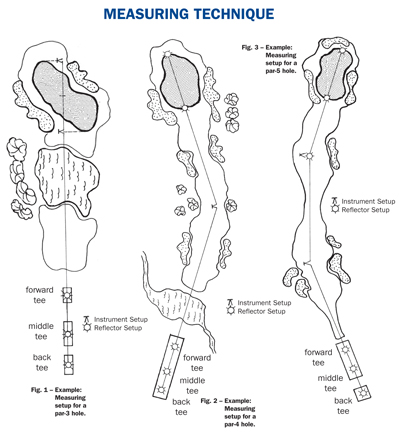
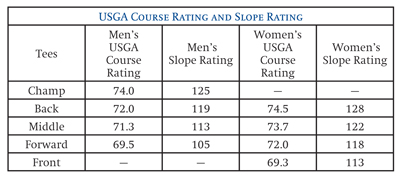

|
Section 12 MEASUREMENTS Definitions Within each section, all defined terms are in italics and are listed alphabetically in Section 2 - Definitions. Accurate permanent marker placement is imperative in the rating process. Permanent markers are to reflect an average placement of the movable tee markers over time. Incorrectly placed markers will make it difficult for the golf course staff to set up the course each day, keeping the effective course difficulty constant and in line with the ratings issued. Permanent marker placement is more likely to have a greater impact on ratings than green speed, height of rough and other course maintenance practices. Courses and clubs should pay special attention to this issue and are encouraged to consult the authorized golf associations in the area for assistance in determining accurate placement. When a single tee pad is designated for one set of tees, placement of the permanent marker at a point opposite the middle of the teeing area is appropriate. This maximizes the ability of the golf course to use the entire teeing area and gives the best chance of reflecting an average of movable marker placement over time. When more than one set of tees uses a single tee pad, consider the percentage of a club's existing or anticipated play from each set of tees when determining permanent marker placement. Allocate the percentage of play to the teeing area and place each permanent marker at a point opposite the mid-point of each of the allocated areas. As an example, a forty-yard teeing area is to be shared by three sets of tees. The club determines that 25% of play will be from the forward tees, 50% from the middle tees, and 25% from the back tees. Allocation would then have the first 10 yards of the teeing area dedicated to the forward tees, the middle 20 yards to the middle tees and the final 10 yards to the back tee. The permanent marker placement would be at the mid-point of each of these three areas. On a nine-hole course, if separate tees or tee markers are used for each nine of an 18-hole round, separate measurements and permanent yardage markers must be established for each nine. The yardage markers (and their respective tee markers) for each nine may be uniquely identifiable.
Each hole must be measured horizontally (air line) by an electronic measuring device (EMD), surveying instruments, or a global positioning system (GPS) from the permanent yardage marker for every teeing area on the golf course to the center of the green. Any trained individual may perform course measurement, subject to review by the authorized golf association that issues the USGA Course Rating to the golf club. Yardages on the scorecard should accurately reflect this measurement. Accurate hole measurements to the nearest yard are very important. A hole with a dogleg must be measured on a straight line from the tee to the center of the fairway at the bend. If the pivot point is not easily discernible, select a pivot point that is approximately 250 (men) or 210 (women) yards from the set of tees played by the majority of golfers. The measurement must continue from that point on a straight line to the center of the green or to the next pivot point if applicable.
The tee markers used to designate the teeing ground (see "The Rules of Golf," Definitions) need to be consistent in color or design for each hole and distinguishable from other tee markers. The actual color, design, or other method for identifying a particular set of tee markers is up to the Committee in charge of the course in consultation with the Handicap Committee. Course Handicap Tables (see Section 3-3), scorecards, and signage where scores are posted should use the same terminology in referring to the various tees. This material should include the USGA Course Rating and Slope Rating for each set of tees to make it easy for players to convert a Handicap Index to a Course Handicap before play and then to post a score for handicap purposes, complete with Ratings, after play. A tee played by both men and women should have a separate USGA Course Rating and Slope Rating. If a set of tees has not been rated for the appropriate gender, the procedure for posting a score from a set of unrated tees may be used by both men and women when they play. (See Section 5-2g). Nine-hole Rating should be displayed by the golf club to assist players who are returning nine-hole scores for handicap purposes. This also applies for a combination on nines. Using a combination of tees throughout the round must be determined and published prior to the start of the round and is a matter for the Committee in charge of the competition to determine in consultation with the Handicap Committee.


Where tees generally used by one gender are also used by the other, there should be a USGA Course Rating and Slope Rating for men and for women from those tees so that all players may post their scores accurately for handicap purposes. The procedure for posting a score from a set of unrated tees may be used by both men and women when they play a set of tees that has not been rated for the appropriate gender. (See Section 5-2g.) Ratings for combinations of nine holes from each set of tee markers should be posted to assist players returning 18-hole scores made by combining nine-hole scores. |